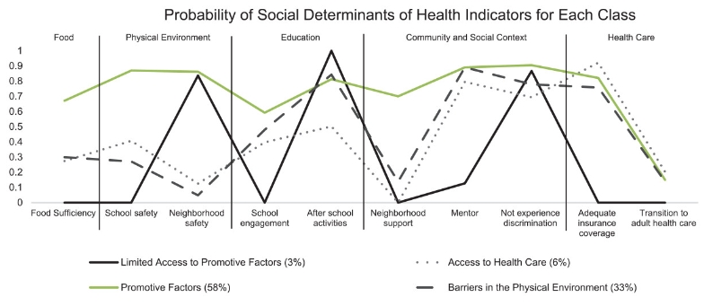

潜在类别分析 (LCA) 是一种统计方法，用于识别人群中通常具有某些共同特征的子群体。LCA 的基本假设是，未观察到的群体（或类别）的成员身份可以通过调查问题、评估指标或量表的得分模式来解释。LCA 的应用是一个活跃的研究领域，并且不断发展。随着越来越多的研究人员开始应用该方法，需要有关进行 LCA 时主要考虑事项的详细信息。在本文中，我们将描述 LCA，回顾进行 LCA 时要考虑的关键要素，如何汇报LCA结果，并提供其应用的示例。
什么是 LCA
LCA 用于检测样本中潜在的（或未观察到的）类别（Hagenaars & McCutcheon，2002）。它是以人为中心的混合模型的一个特例，根据对观察到的变量的反应模式识别样本中的潜在亚群（BO Muthén & Muthén，2000）。LCA 的基本假设是，未观察到的类别的成员身份可以导致或解释调查问题、评估指标或量表的得分模式（BO Muthén & Muthén，2000；Wolke 等人，2013）。根据统计理论，个人在一组指标变量上的得分由其类别成员身份决定。这一概念类似于因子分析程序中驱动量表项目得分的潜在结构的概念（Kline，2016）。
LCA 于 1950 年首次提出（Lazarsfeld，1950 年），此后经历了多次修订和改进（完整摘要，请参阅 Clogg，1981 年、1995 年；Hagenaars，1990 年；Vermunt，1997 年；Nylund-Gibson & Choi，2018 年）。随着 LCA 的不断发展，学者们就几个关键问题展开了争论：(a) 选择指标变量，(b) 选择最终的类模型，以及 (c) 决定如何纳入协变量以及在研究中报告哪些统计数据。由于这些争论，最近进行了许多系统评价来总结 LCA 文献（例如 Killian 等人，2019 年；Petersen 等人，2019 年；Ulbricht 等人，2018 年）。结果表明，报告实践差异很大，研究很少测试高级模型，例如纵向 LCA 模型、测量不变性模型或具有协变量的模型。
LCA 与 聚类
LCA（Latent Class Analysis）和聚类分析虽然在某些方面有相似之处，但它们在数据处理、假设条件和输出结果等方面存在显著差异。
数据处理：
- LCA：LCA假设数据中存在潜在的、不可观察的子群体（即潜变量），并通过分析来识别这些子群体。LCA通常使用分类变量作为输入，通过交叉表来分析数据。
- 聚类分析：聚类分析则侧重于根据观测变量的相似性将个案分组。它通常使用连续变量，并通过计算个案之间的距离来进行分组。
假设条件：
- LCA：LCA假设潜变量的存在可以解释观测变量的模式。它不依赖于变量的均值来定义相似性，而是依赖于潜变量对观测变量的影响。
- 聚类分析：聚类分析假设具有相似特征的个案应该被归为同一群。它通常使用变量的均值来定义个案之间的“近似度”。
输出结果：
- LCA：LCA的结果包括每个个案属于各个潜类的概率，而不是明确的类别分配。尽管可以根据概率进行类别划分，但这种划分不是强制性的。
- 聚类分析：聚类分析通常会生成一个明确的类别划分，即将每个个案明确分配到某个簇中。
统计程序：
- LCA：LCA使用的是基于概率的统计方法，如贝叶斯信息准则（BIC）和似然比检验，来评估模型的拟合优度。
- 聚类分析：聚类分析通常使用距离度量（如欧氏距离、曼哈顿距离等）和聚类算法（如K-means、层次聚类等）来分组。
总结来说，LCA和聚类分析的主要区别在于它们的数据处理方式、假设条件和输出结果。LCA更关注潜在子群体的识别，而聚类分析则侧重于根据观测变量的相似性进行分组。
LCA 软件
LCA 可以使用多种商业和免费统计软件包进行，包括 STATA（StataCorp LLC，1985-2019 年）、SAS（SAS Institute Inc.，2016 年）、R（Venables & Smith，2019 年）和 Mplus（LK Muthén & Muthén，1998-2017 年）。已经开发了专门用于进行 LCA 的软件包，包括 LatentGold（Vermunt & Magidson，2016 年）和 R 的 poLCA（Linzer & Lewis，2011 年）。最近的研究使用了 Mplus（Killian 等人，2019 年；Petersen 等人，2019 年）。Mplus 是一个语法驱动的统计软件包，可用于基本 LCA 建模和存在问题（例如复杂调查设计和缺失数据）的建模（Muthén & Muthén）。
LCA 中关键步骤
样本量大小
与其他类型的结构方程模型 (SEM) 一样，对于 LCA 的适当样本量，答案是“越多越好，但要视情况而定”。根据大量研究，Nylund-Gibson 和 Choi (2018) 建议 300 个或更多的案例是理想的。但是，对于更简单的模型（更少的指标和类别）和“分离良好”的类别，较小的样本可能就足够了（Nylund-Gibson 和 Choi）。样本量低的潜在分析问题包括功能拟合指数差、收敛失败以及无法发现成员数低的类别（Nylund-Gibson 和 Choi）。确定样本量的另一种方法是进行蒙特卡洛模拟（LK Muthén 和 Muthén，2002）。然而，这种方法最常用于 LCA 方法论论文（例如，Kim & Wang，2019；Lythgoe 等，2019；Shin 等，2019）。
筛选观测指标
选择好的指标（indicator variables）是应用潜类别分析（Latent Class Analysis, LCA）的关键步骤。以下是选择好的指标应遵循的原则和方法：
理论驱动：选择指标应基于现有的理论和研究。理论指导可以帮助选择与研究目的相关的指标，并确保它们能够有效区分不同的潜类别。
相关性：选择的指标应与研究的目标和潜类别假设密切相关。例如，如果研究目的是识别健康的社会决定因素，选择的指标应与健康状况和社会环境有关。
独立性：指标之间应尽可能独立，以避免多重共线性问题。高度相关的指标可能会导致类别的划分不清晰，影响模型的解释力。
可操作性：指标应易于测量和量化。在实际操作中，这意味着指标应该是可观察的、可量化的变量。
样本大小：考虑到样本大小，确保所选指标能够在统计上显著区分不同类别。小样本量可能限制了模型的复杂性和指标的数量。
数据质量：确保所选指标的数据质量高，包括数据的完整性和准确性。缺失数据或错误数据会影响模型的估计和结果的可靠性。
模型适应性：在实际建模过程中，根据模型的拟合情况和诊断统计结果调整指标的选择。可能需要尝试不同的指标组合，以找到最佳的模型解决方案。
验证和敏感性分析：通过验证和敏感性分析来评估指标选择的稳健性。这可以通过在不同样本或不同模型设定下检验指标的有效性来实现。
综上所述，选择好的指标是一个迭代和动态的过程，需要结合理论知识、数据分析技巧和实际操作经验。通过综合考虑上述原则，研究人员可以提高LCA模型的质量和解释力。
数据整理
准备好你的数据文件非常重要。例如，对于使用 Mplus（LK Muthén & Muthén，1998-2017）的研究人员，我们建议将所有变量的缺失值重新编码为超出响应选项范围的数值或使用 −999。按被试标识变量对数据文件进行排序也很有帮助，这样 LCA 生成的新变量就可以合并回数据集并与正确的 ID 进行对齐。可以保存仅包含类变量、被试 ID 和潜在协变量的文件以供 LCA 程序使用；或者，可以保存整个文件。
估计器的选择
在选择估计器（Estimator）时，研究人员需要考虑多个因素。LCA模型可以使用多种估计器（Estimator），软件程序通常有默认的估计器（Estimator）（例如，Mplus默认使用最大似然估计）。然而，选择估计器（Estimator）取决于一些标准，如样本量、变量数量、计算速度以及缺失数据的管理。此外，研究人员所在学科的报告惯例也会影响估计器（Estimator）的选择。例如，某些专业更倾向于使用probit而不是logit回归结果。由于选择是基于一系列标准，建议初学者使用LCA的默认估计器（Estimator），直到他们对LCA有了更深入的了解。
决定分类数量
研究人员可以使用一些标准来选择最终的类别个数。但是，我们首先承认，用于确定类别数量的标准是一个不断发展（有时是有争议的）的研究领域。尽管如此，统计标准应始终与可解释性一起评估（BO Muthén & Muthén，2000；Shanahan 等人，2013；Stringaris 等人，2013）。根据一些统计标准可以找到最佳的分类个数， 但是如果从理论上讲不合理，这个最佳分类个数也是不合理的， 所以一切以研究者的理论为准，而不是一味遵循统计指标。
决定分类个数的指标包括以下几个：
熵（Entropy）：
- 含义：熵是一个诊断统计量，用于衡量模型定义类别的准确性。
- 解释：熵值接近1表示类别划分非常准确，而高于0.8通常被认为是可接受的。
贝叶斯信息准则（BIC）：
- 含义：BIC奖励模型的简洁性，可用于比较不同的LCA解决方案。
- 解释：较低的BIC值表示模型拟合较好。
阿克AIKE信息准则（AIC）：
- 含义：AIC也是一种信息准则，用于评估模型的拟合优度。
- 解释：较低的AIC值表示模型拟合较好。
样本量调整贝叶斯信息准则（SABIC）：
- 含义：SABIC是对BIC的调整，考虑了样本量的影响。
- 解释：较低的SABIC值表示模型拟合较好。
近似权重证据标准（AWE）：
- 含义：AWE是一种评估模型复杂性和拟合优度的标准。
- 解释：较高的AWE值表示模型的证据权重较大，模型拟合较好。
一致阿克AIKE信息准则（CAIC）：
- 含义：CAIC是对AIC的修正，适用于大样本量的情况。
- 解释：较低的CAIC值表示模型拟合较好。
贝叶斯因子（BF）：
- 含义：BF用于比较不同模型之间的相对拟合优度。
- 解释：较大的BF值表示某一模型相对于其他模型的拟合优度较高。
平均潜类别后验概率（ALCPP）：
- 含义：ALCPP表示个体被正确分配到某一类的概率。
- 解释：较高的ALCPP值（接近1）表示个体被分配到该类的概率较高。
Vuong-Lo-Mendell-Rubin调整似然比检验（VLMR-LRT）：
- 含义：VLMR-LRT用于检验模型中类别数量的显著性。
- 解释：显著的VLMR-LRT结果支持增加类别数量。
这些指标从不同角度评估了模型的拟合优度和类别划分的准确性，研究人员可以根据这些指标综合判断并选择最优的分类个数。
纳入协变量
LCA 文献中一个不断发展的主题是将协变量纳入模型。在 LCA 中纳入协变量可让研究人员回答诸如“类别的组成是否因社会人口统计学特征而不同？”之类的问题。以前，研究人员会将协变量纳入与用于确定类别解决方案的模型相同的模型中（Vermunt，2010 年）。然而，这种一步法可能会导致有缺陷、错误指定的模型（Nylund-Gibson 和 Masyn，2016 年）。一步法已被许多较新的方法所取代。目前，研究人员被鼓励采用新的三步法（Asparouhov 和 Muthén，2014 年；BO Muthén 和 Muthén，2000 年；Vermunt，2002 年）或 Bolck 等人（2004 年）的方法。这两种方法都要求研究人员确定测量模型（例如，使用拟合统计数据的最终类别模型），然后添加协变量。在含有协变量的模型中，研究人员将测量参数固定为不含协变量的模型中获得的参数。
结果汇报
为了呈现清晰的结果和合理的结论，LCA 报告需要清晰连贯地说明研究程序和结果（Appelbaum 等人，2018 年）。此外，LCA 研究应包括下表中列出的项目。尽管研究人员对报告哪些模型统计数据的看法各不相同（例如，Nylund 等人，2007 年；Schreiber，2017 年），但我们建议报告 BIC 和至少两个额外的拟合指数，以及熵、最小类的百分比和大小以及平均潜在类后验概率矩阵的最小非对角线值。如果使用其他标准来评估模型，研究人员也应报告此信息。
表1：
- 如果基于理论，则说明所选指标变量的基本原理
- 如果不是基于理论，则说明建立探索性模型的基本原理
- 数据特征（例如描述性统计数据、缺失数据）
- 统计软件包和年份
- 估算方法
- 用于选择类别模型的标准，包括统计模型（例如 BIC、SABIC、CAIC）和实质性模型
- 至少包含两个拟合标准、熵和最小平均潜在类别后验概率的表格
- 已识别类别的数量
- 每个类别的样本数量或样本百分比
结果汇报案例
以下报告是一个案例，用于向你展示如何报告 LCA 结果。
被试
我们使用 2016 年和 2017 年全国儿童健康调查 (儿童和青少年健康测量倡议，2016) 的看护者的数据进行了二次数据分析。数据来自哥伦比亚特区和所有 50 个州 0 至 17 岁非住院青少年的看护者。我们使用了复杂的数据收集程序来确保随机性。
变量的测量
心理健康
全国儿童健康调查 (NSCH) 收集护理人员报告数据，内容是服务提供者是否曾告诉护理人员其青少年患有心理健康疾病。该中心提供了编码建议（有关编码的完整信息，请参阅《儿童和青少年健康测量倡议》，2018 年），我们使用了这些建议。
健康决定因素
为了确定健康的社会决定因素概况，我们纳入了 10 个指标变量。充分的保险覆盖率的衡量标准是儿童拥有当前的健康保险，该保险通常或始终满足他们的需求，允许他们看需要的提供者，并且产生合理的自付费用或不产生自付费用。基于此信息，此变量被二分编码（有足够的保险覆盖率或没有足够的保险覆盖率）。过渡到成人医疗保健的衡量标准是医生在预防性检查期间单独与青少年交谈，医生积极讨论和与青少年合作以获得技能并了解在需要时过渡到成人医疗保健的情况。基于此信息，此变量被二分编码（获得充分的成人医疗保健过渡或未获得充分的成人医疗保健过渡）。
其他指标在这里省略了，因为我们只是提供一个报告的样例，其他指标也是类似的汇报方法。
协变量
与之前使用NSCH数据的研究一致，我们纳入了以下控制变量：性别、基于联邦贫困线的收入、最高教育水平以及家庭主要语言（例如，Butler等人，2015年；Weller等人，2018年；Weller等人，2019年）。
分析
我们使用Mplus 8.2进行所有分析（L. K. Muthén & Muthén, 1998-2017）。由于复杂的调查设计，我们的模型包括一个聚类变量和抽样权重。我们指定了具有稳健标准误差的最大似然估计（B. O. Muthén等人，2015）。为了处理缺失数据，我们在这些模型中使用了Mplus中的基于似然的默认估计（Asparouhov，2016）。
为了确定健康的社会决定因素的特征（目标1），我们首先估计了一个一类模型，然后添加类别，直到我们确定了拟合度最佳的模型。我们根据对健康的社会决定因素的理论理解（2020年和2010年卫生部长健康促进和疾病预防目标咨询委员会）和以下统计标准来检查模型拟合度：（a）BIC，较低的BIC表示模型拟合度较好（Nylund等人，2007），（b）BF，值为3或更高是可取的（Masyn，2013）。我们没有检查LMR或自举似然比测试，因为它们无法解释复杂的数据（B. O. Muthén，2016）。我们还报告了其他拟合度统计信息，以展示研究人员可以报告的其他类型的模型质量统计信息。
在确定了最佳分类个数后，我们根据每个案例的后验类别成员概率将其分配给特定的类别，然后固定了LCA模型的测量参数（Asparouhov & Muthén，2014；Vermunt，2010）。虽然我们没有指定与协变量相关的研究问题，但包括协变量与以前使用NSCH数据集的研究保持一致，并允许我们展示如何将协变量纳入LCA模型。我们使用新的三步法来纳入协变量（和远端结果），指定了多个协变量和心理健康结果为辅助变量。
最后，我们利用前面提及的新三步法产生的成对Wald检验结果，以探究健康社会决定因素是否与四种心理健康结果相关（目标2）。我们通过分析95%置信区间来评估不同类别与结果之间是否存在显著差异。由于我们充分利用了新三步法的优势且数据集较为复杂，在数据分析的这一步骤中，我们无法采用高级方法来处理缺失数据。因此，仅针对这些模型，我们移除了总共73个案例（占4%）。缺失数据的案例在性别、收入或父母教育水平上并未出现显著差异。然而，与无缺失数据的案例相比，缺失数据的案例居住在主要说英语的家庭中的可能性显著较低（OR = -1.485，95% CI [-2.832, -0.138]）。
结果
人群分布
结果可以推广至美国非西班牙裔黑人青少年（12-17 岁）（N = 1,836）。下表列出了样本特征和对指标变量的响应。例如，如图所示，46.3% 的样本为女性，59% 生活在 200% 贫困线以下。该表还显示，15.4% 的青少年因种族而遭受歧视，86.2% 的青少年有导师。大多数（78.5%）的青少年都得到了充分的健康保险，但只有 14.7% 的青少年覆盖到成人医疗保健。超过一半的青少年居住在安全的社区（53.8%）并就读于安全的学校（61.4%）；然而，44.3% 的人报告说他们的社区很支持他们。大多数青少年（80.3%）参加了至少一项课外活动，52.4% 的人参与了学校活动。
| | Unweighted n (Weighted %) |
|---|---|
| Sociodemographics | |
| Gender | |
| Female | 875 (46.3) |
| Male | 961 (53.7) |
| Poverty level | |
| <199% | 875 (41.0) |
| >200% | 961 (59.0) |
| Highest level of education | |
| <High school | 74 (10.7) |
| >High school graduate | 1,697 (89.3) |
| Primary language | |
| Other than English | 48 (4.5) |
| Social determinants of health indicators | |
| Adequate insurance coverage | |
| Adequate insurance coverage | 1,335 (78.5) |
| Does not have adequate insurance coverage | 386 (21.5) |
| Transition to adult health care | |
| Received adequate transition to adult health care | 284 (14.7) |
| Did not receive adequate transition to adult health care | 1,526 (85.3) |
| School engagement | |
| Cares about doing well and does homework | 1,055 (52.4) |
| Cares about doing well OR does homework | 608 (40.9) |
| Does not care about doing well and does not do homework | 138 (6.7) |
| After-school activities | |
| Participated in at least one activity | 1,473 (80.3) |
| Did not participate | 317 (19.7) |
| Mentor | |
| Yes | 1,537 (86.2) |
| No | 193 (13.8) |
| Experienced discrimination | |
| No | 1,469 (84.6) |
| Yes | 275 (15.4) |
| Social determinants of health indicators | |
| Food sufficiency | |
| We could always afford to eat good nutritious meals | 1,039 (50.0) |
| We could always afford enough to eat but not always the kinds of food we should eat | 568 (35.5) |
| Sometimes we could not afford enough to eat | 145 (11.1) |
| Often we could not afford enough to eat | 31 (3.4) |
| Neighborhood support | |
| Live in supportive neighborhoods | 820 (44.3) |
| Do not live in supportive neighborhoods | 924 (55.7) |
| Neighborhood safety | |
| Definitely agree | 1,017 (53.8) |
| Somewhat agree | 639 (36.7) |
| Somewhat or definitely disagree | 124 (9.5) |
| School safety | |
| Definitely agree | 1,108 (61.4) |
| Somewhat agree | 575 (34.4) |
| Somewhat or definitely disagree | 68 (4.1) |
| Mental health variables | |
| Behavior problems | 187 (11.9) |
| Attention deficit/hyperactivity disorder | 231 (13.4) |
决定分类数
LCA 的结果支持了目标一，即表明美国黑人青少年中存在多种健康社会决定因素。下表列出了不同类别模型的 LCA 结果。如下表所示，BIC 建议采用四类模型。BF 表明四类或五类模型处于中等可接受范围内（Wagenmakers，2007）。由于 BIC 被认为是 LCA 中最可靠的拟合统计数据（并且 BF 表明该模型具有中等支持度），因此我们选择了四类模型。但是，值得注意的是，其他拟合标准均未表明四类模型。在 LCA 模型中，拟合指标之间的不一致结果很常见（Nylund-Gibson & Choi，2018），这使得研究人员一致同意使用 BIC 来评估模型拟合度很有价值。虽然不使用熵来选择最终模型，但值得注意的是四类模型具有足够的熵（即高于 0.80 的截止值）。
| 模型 | 拟 | 合 | 指 | 标 | ||
|---|---|---|---|---|---|---|
| LL | AIC | BIC | SABIC | AWE | CAIC | BF |
| 1 Class | −11681.92 | 23393.83 | 23476.56 | 23428.91 | 23435.29 | 23427.79 |
| 2 Class | −11106.38 | 22274.75 | 22445.73 | 22347.24 | 22360.43 | 22344.93 |
| 3 Class | −10975.44 | 22044.88 | 22304.11 | 22154.79 | 22174.79 | 22151.29 |
| 4 Class | −10884.00 | 21894.01 | 22241.48 | 22041.33 | 22068.13 | 22036.63 |
| 5 Class | −10834.87 | 21827.74 | 22263.46 | 22012.48 | 22046.09 | 22006.59 |
| 6 Class | −10789.39 | 21768.77 | 22292.73 | 21990.92 | 22031.34 | 21983.84 |
| Models | Diagnostic criteria | |||||
| Smallest class count (n) | Smallest class size (%) | Entropy | ALCPP | VLMR-LRT | ||
| 1 Class | 1836 | 100 | — | — | — | |
| 2 Class | 790 | 43 | 0.687 | 0.896 | 0.1285 | |
| 3 Class | 45 | 2 | 0.827 | 0.909 | 0.5646 | |
| 4 Class | 50 | 3 | 0.811 | 0.834 | 0.8159 | |
| 5 Class | 50 | 3 | 0.746 | 0.747 | 0.8148 | |
| 6 Class | 29 | 2 | 0.763 | 0.749 | 0.5384 |
可视化
下图 显示了四类模型的图形表示。x 轴列出了健康社会决定因素指标变量的名称。y 轴提供了每个指标的类别成员平均概率；数字越接近 1，类别成员概率就越高。所有指标变量都以更高的分数编码，反映了获得促进因素的途径；因此，接近 1 的概率是可取的。
上图还根据对 10 项指标的响应说明了四个类别的特征。大多数黑人青少年（58%）属于“促进因素”类别。这个类别可以获得所有社会健康决定因素的促进指标。相反，样本中的一小部分（3%）属于“促进因素获取有限”类别；除了社区安全和课外活动参与度之外，获得促进因素的可能性很低。获得医疗保健（6%）和物理环境中的障碍（33%）类别具有相似的特征。然而，与物理环境中的障碍类别相比，获得医疗保健类别获得几个促进因素的可能性略高。虽然这不是本研究的重点，但将协变量纳入 LCA 模型的新三步法的结果表明，青少年的社会人口构成没有显著差异。
四类模型与心理健康指标的关系
| Latent class | Behavior problems | ADHD | ||
|---|---|---|---|---|
| OR [95% CI] | p | OR [95% CI] | p | |
| Limited access to promotive factors (reference) | ||||
| Access to health care | 1.11 [−1.42, 3.63] | .39 | 0.27 [−0.46, 1.01] | .467 |
| Promotive factors class | 3.99 [−4.74, 12.72] | .37 | 0.80 [−1.12, 2.72] | .416 |
| Barriers in the physical environment | 3.85 [−4.60, 12.29] | .37 | 1.03 [−1.47, 3.52] | .420 |
| Access to health care (reference) | ||||
| Promotive factors class | 3.61 [−0.48, 7.70] | .08 | 2.91 [−0.93, 6.75] | .138 |
| Barriers in the physical environment | 3.48 [−0.64, 7.60] | .10 | 3.74 [−1.67, 9.15] | .176 |
| Promotive factors class (reference) | ||||
| Barriers in the physical environment | 0.98 [0.23, 1.70] | .01 | 1.29 [0.35, 2.23] | .007 |
成对 Wald 检验的结果支持了第二个目标，即班级成员身份可能与青少年目前患有行为问题或 ADHD 的可能性存在不同的关联（见上表）。例如，如图所示，与物理环境中的障碍类 95% CI [0.23, 1.70] 相比，促进因素类患有行为问题的几率比为 0.97（或低 3%）。相反，与物理环境中的障碍类 95% CI [0.35, 2.23] 相比，促进因素类患有 ADHD 的几率比为 1.29（或高 29%）。
哪些变量可以对分类有预测作用（逻辑回归）
| Profile | Covariates | Logit | SE | p | OR | [95% CI] |
|---|---|---|---|---|---|---|
| Limited access to promotive factors class | ||||||
| Access to health care class | Female | −0.44 | 1.10 | −0.40 | 0.64 | [0.07, 5.58] |
| Primary language | 18.36 | 1.04 | 17.68 | — | — | |
| Income | 0.91 | 1.23 | 0.74 | 2.48 | [0.22, 27.69] | |
| Parental education level | 26.06 | 0.75 | 34.56 | — | — | |
| Promotive factors class | Female | −0.90 | 1.01 | −0.90 | 0.41 | [0.06, 2.92] |
| Primary language | 17.38 | 0.93 | 18.67 | — | — | |
| Income | −0.38 | 1.04 | −0.37 | 0.68 | [0.09, 5.19] | |
| Parental education level | 25.77 | 0.63 | 40.71 | — | — | |
| Barriers in the physical environment class | Female | −0.92 | 1.02 | −0.91 | 0.4 | [0.05, 2.93] |
| Primary language | 17.79 | 0.00 | — | — | — | |
| Income | 0.26 | 1.05 | 0.25 | 1.29 | [0.17, 10.11] | |
| Parental education level | 24.62 | 0.00 | — | — | — | |
| Access to health care class | ||||||
| Promotive factors class | Female | −0.46 | 0.48 | −0.96 | 0.63 | [0.25, 1.62] |
| Primary language | −0.98 | 0.98 | −0.99 | 0.38 | [0.06, 2.58] | |
| Income | −1.29 | 0.67 | −1.92 | 0.28 | [0.07, 1.03] | |
| Parental education level | −0.29 | 0.57 | −0.51 | 0.75 | [0.25, 2.28] | |
| Barriers in the physical environment class | Female | −0.48 | 0.53 | −0.91 | 0.62 | [0.22, 1.74] |
| Primary language | −0.57 | 1.04 | −0.55 | 0.57 | [0.07, 4.33] | |
| Income | −0.65 | 0.73 | −0.89 | 0.52 | [0.13, 2.18] | |
| Parental education level | −1.44 | 0.75 | −1.91 | 0.24 | [0.05, 1.04] | |
| Promotive factors class | ||||||
| Barriers in the physical environment class | Female | −0.02 | 0.23 | −0.09 | 0.98 | [0.62, 1.54] |
| Primary language | 0.41 | 0.93 | 0.44 | 1.5 | [0.24, 9.31] | |
| Income | 0.64 | 0.24 | 2.74 | 1.9 | [1.20, 3.01] | |
| Parental education level | −1.15 | 0.63 | −1.82 | 0.32 | [0.09, 1.10] | |
类似教程
参考
https://journals.sagepub.com/doi/full/10.1177/0095798420930932
咨询
本站提供付费咨询，联系我微信： mllncn